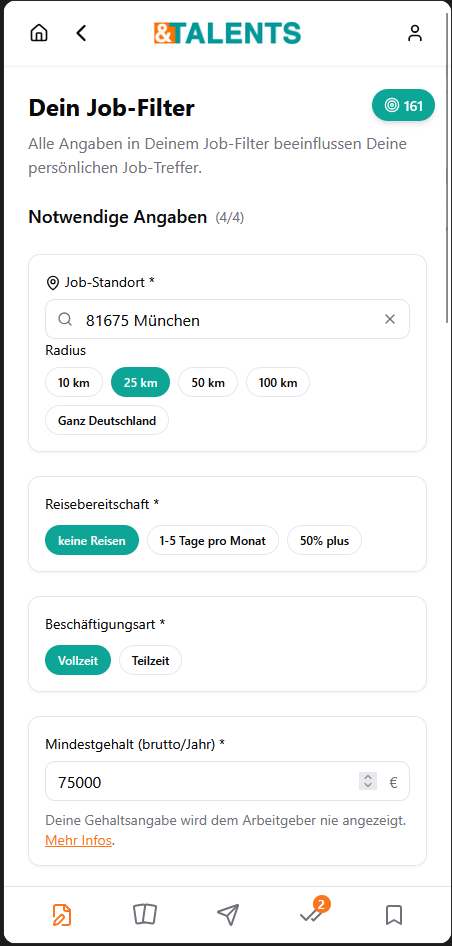
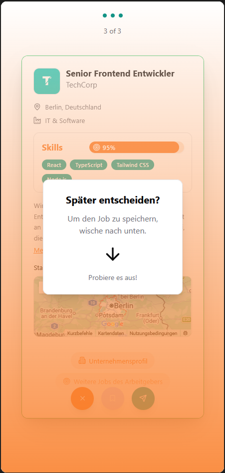

&TALENTSSchneller finden,
Schneller finden,
was wirklich passt.
Klare Erwartungen, entscheidende Fähigkeiten und nachvollziehbares Matching bringen Kandidaten und Recruiter schneller zusammen.
Eine Plattform. Zwei Perspektiven.
Wähle Dein Team.
01
Ich suche meinen nächsten Job
Profil anlegen →02Für Kandidaten
Definiere, was Du kannst und was Du willst. &TALENTS zeigt Dir Jobs, die wirklich zu Dir passen.
Ich suche passende Talente
Job einstellen →Für Recruiter
Beschreibe die entscheidenden Anforderungen. Erhalte Bewerbungen von Menschen, deren Profil dazu passt.
In a nutshell:
&TALENTS hört beiden Seiten zu und bringt nur passende Erwartungen zusammen.
&
&TALENTSversteht beide SeitenIch möchte Menschen kennenlernen, die wirklich zu diesem Job passen.
IT'S A MATCHKein Zufall, sondern ein nachvollziehbarer Prozess.


Bewerben per Swipe
Fokus auf das Wesentliche.
Ein vertrautes Bedienprinzip macht komplexes Matching leicht. Hinter jeder Karte steckt eine nachvollziehbare Passung.
Klare Entscheidung
Interessant, nicht passend oder für später speichern.
Transparenter Score
Passende, fehlende und zusätzliche Fähigkeiten auf einen Blick.
Fire Skills
Die wichtigsten Stärken und Anforderungen zählen doppelt.